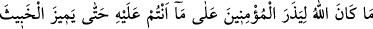
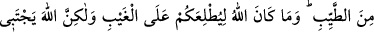
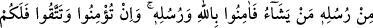
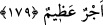

darlıkların rahminden çıkmanın yoludur. Bu çıkışı Hz. Îsâ’nın: “İki kere doğmayan,
göklerin melekûtuna giremez!” sözünde işâret edilen ikinci doğumdur. Hatta denebilir ki
oruç mücâhedesi, Allah’a kavuşma müşâhedesinin râbıtasıdır. Şu hadis-i kudsî de buna
işâret etmektedir: “Oruç, benim içindir. Onun mükâfatını, ancak ben veririm.”[153]
Yani onun mükâfatı bizzat benim. Bu sebepledir ki Hak Teâlâ, kendisini görebilme
saâdetini Hz. Îsâ’ya: “Aç kal ki beni göresin” buyurarak, aç kalmaya bağlamıştır.
Dâim şöyle bir nidâ gelir Hak Teâlâ’dan:
“Ulaşırsın yalnız kalırsan; beni görürsün, aç kalırsan.”
Allah Teâlâ bunu cümlemize nasip eylesin!
179. Allah, mü’minleri (şu) bulunduğunuz durumda bırakacak değildir; sonunda
murdarı temizden ayıracaktır. Bununla beraber Allah, size gaybı da bildirecek
değildir. Fakat Allah, elçilerinden dilediğini ayırdeder. O halde Allah’a ve
peygamberlerine îman edin. Eğer îman eder, takvâ sahibi olursanız sizin için de çok
büyük bir ecir vardır.
“Allah” ihlâslı “mü’minleri, şu üzerinde bulunduğunuz halde bırakacak değildir.”
Allah hitabını: “Asr-ı Saâdet’teki ihlâslı veya münâfık her mü’mine yöneltmiştir.
“Allah temizi pisten ayıracaktır.” İhlâslı olanlarınızı, içinde bulunduğunuz karışık
durumda bırakacak değildir. İhlâslı ve münâfık, hepiniz tasdikte müttefiksiniz diye
ihlâslı olanlarınızla münâfık olanlarınızı bilmiyor değildir. Sonunda durumunuzu
peygamberine vahyederek, ya da cihad veya hicret gibi kriterlerle münâfığı ihlâslıdan
ayıracaktır.”
“Sizi gayba vâkıf kılacak değildir.” Allah herhangi birinize gayb ilmini verip de
kalplerdeki îmana ve küfre muttali kılacak değildir. “Fakat Allah peygamberlerinden
dilediğini seçer” ve vahiy tarîkı ile bazı gaybî bilgileri bildirir. Ya da önüne bu bilgiye
götürecek emâreler diker.
“O halde, Allah’a ve O’nun peygamberlerine inanın.” İhlâslı bir şekilde, ya da
gayba sadece O’nun vâkıf olduğunu; elçilerinin de Allah’ın bildirdiğinden başkasını
bilmeyen; kendilerine vahyedilenden başkasını bilmeyen; seçilmiş kullar olduğunu
bilerek inanın.